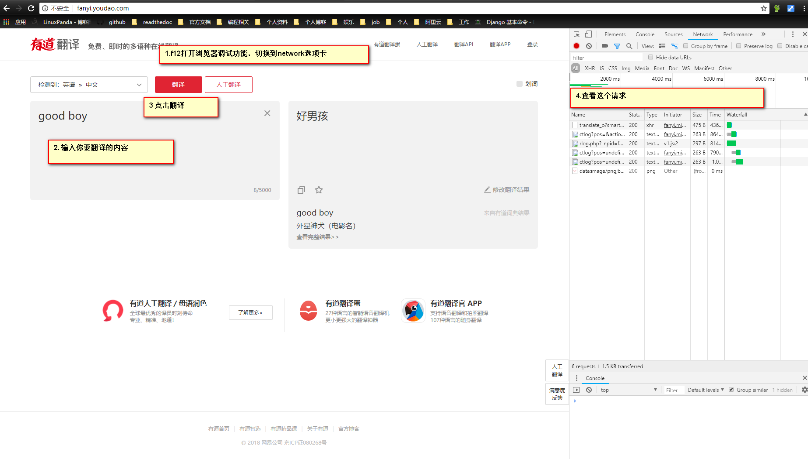
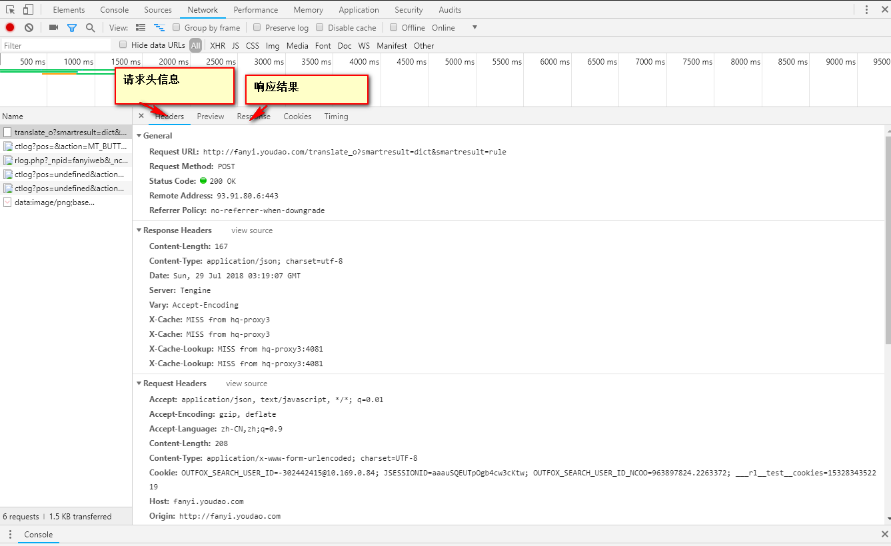
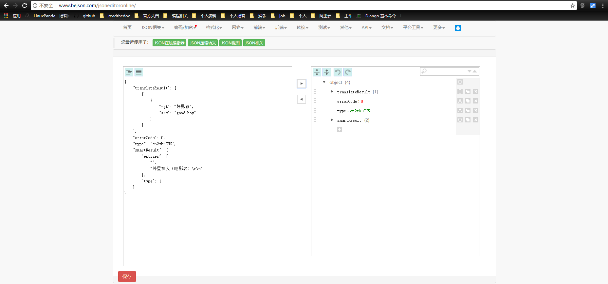

urllib入门
获取下网页源码
# 导入python标准的urllib请求包
import urllib.request
url="https://docs.scrapy.org/en/latest/"
response = urllib.request.urlopen(url)
# 读取响应流并decode为utf-8的
html = response.read().decode('utf-8')
print(html)
下载一个图片
# 导入python标准的urllib请求包
import urllib.request
url="http://www.linuxpanda.tech/images/avatar.jpg"
response = urllib.request.urlopen(url)
if response.getCode == 200:
with open ("sijia.png",'bw') as f :
f.write(response.read())
执行完毕会在当前目录下生成一个sijia.png图片，如下图。
利用有道翻译翻译
有道翻译，在做之前需要使用浏览器获取写基础的信息。
 解析结果是json结果，推荐使用在线的json编辑器去获取结构信息
代码如下：
# 导入python标准的urllib请求包
import urllib.request
import urllib.parse
import json
# 这个url是调试的时候抓取到的接口地址,主要调试得到的是translate_o的。这里需要修改下。
url="http://fanyi.youdao.com/translate?smartresult=dict&smartresult=rule"
# 这个data信息是根据调试中的form data里面信息获取到的
data={
'i': 'good boy',
'from': 'AUTO',
'to': 'AUTO',
'smartresult': 'dict',
'client': 'fanyideskweb',
'salt': '1532835301042',
'sign': '861dbcf1c6a959f3d0933003d0b8e81d',
'doctype': 'json',
'version': '2.1',
'keyfrom': 'fanyi.web',
'action': 'FY_BY_CLICKBUTTION',
'typoResult': 'false'
}
data= urllib.parse.urlencode(data).encode('utf-8')
response = urllib.request.urlopen(url,data)
# 读取响应流并decode为utf-8的
html = response.read().decode('utf-8')
json_result = json.loads(html)
print(json_result['translateResult'][0][0]["tgt"])
Note
现在有点引入了salt和sign会有一定有效期的。
隐藏浏览器代理
默认使用urllib，我们的user-agent是Python-urllib/2.6这种类型的，如果服务器端拒绝这种代理来源的话，我们就无法获取到我们需要的数据了。
# 添加head
headers={
"User-Agent": "Mozilla/5.0 (X11; U; Linux i686) Gecko/20071127 Firefox/2.0.0.11"
}
req= urllib.request.Request(url,headers=headers)
# 如果上面没有指定heads,也是可以使用Request.add_header(key, val)方法添加对应的head
response = urllib.request.urlopen(req)
避免防盗链问题
有些网站对自己的图片资源有防盗链设置，你要下载他的图片，必须是通过他的网址跳转过去的， 直接下载是没法下载的。
req= urllib.request.Request(url,headers=headers)
req.add_header('Referer', 'http://www.python.org/')
req.add_header('User-Agent', 'Mozilla/5.0 (X11; U; Linux i686) Gecko/20071127 Firefox/2.0.0.11')
response = urllib.request.urlopen(req)
认证问题
import urllib.request
# Create an OpenerDirector with support for Basic HTTP Authentication...
auth_handler = urllib.request.HTTPBasicAuthHandler()
auth_handler.add_password(realm='PDQ Application',
uri='https://mahler:8092/site-updates.py',
user='klem',
passwd='kadidd!ehopper')
opener = urllib.request.build_opener(auth_handler)
# ...and install it globally so it can be used with urlopen.
urllib.request.install_opener(opener)
urllib.request.urlopen('http://www.example.com/login.html')
这里使用install_opener来安装一个opener,这样我们后续使用urlopen会自动使用这个opener的，如果我们又代理的需求，也是可以构造一个ProxyHandler的。
使用浏览器代理
通常情况下我们使用爬虫就是快速抓取特定的数据，对人家服务器的压力是巨大的，服务器可能会根据特定ip请求的次数来判定爬虫，然后进行封禁操作。
import urllib.request
url="http://www.ip.cn"
proxy_handler = urllib.request.ProxyHandler({"http":"91.147.221.160:41766"})
opener = urllib.request.build_opener(proxy_handler)
opener.addheaders = [('User-agent', 'Mozilla/5.0 (Windows NT 10.0; Win64; x64) AppleWebKit/537.36 (KHTML, like Gecko) Chrome/67.0.3396.99 Safari/537.36')]
response = opener.open(url)
html = response.read().decode('utf-8')
print(html)
具体的代理ip自行搜索。